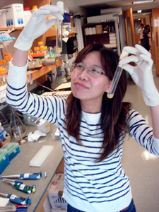

|
Daniel J. Lew, PhD
Professor of Pharmacology and Cancer Biology
Professor of Molecular Genetics and Microbiology
Director, Program in Cell and Molecular Biology
Box 3813
C359 LSRC bldg
Duke University Medical Center
Durham, NC 27710
Tel (919) 613-8627
Fax (919) 681-1005
Email daniel.lew@duke.edu
daniel.lew@duke.edu
|
|
|
Hui Kang
Graduate Student
hk105@duke.edu
Septins are highly conserved GTP-binding proteins that form ordered
filaments underneath the plasma membrane. In budding yeast, they assemble
into ring-like structures in the bud initiation stage and later converts into
collar-like structures. But the mechanisms of septin assembly are mostly
unclear. I'm using live cell imaging and genetic mutations to probe which
factors are invovled in this process.
|
|
|
Helen Lai
Graduate Student
hl165@duke.edu
I am interested in how yeast establish and maintain cell polarity
during mating. Haploid cells polarize growth to form a projection (shmoo)
towards their mating partners to fuse and form a zygote. I aim to understand
how yeast coordinate the polarity machinery with the pheromone gradient
sensing machinery in order to shmoo at the correct direction. I am also
investigating the roles of the polarisome proteins during polarity establishment.
|
|
|
Allie McClure
Graduate Student
aww13@duke.edu
I am interested in the mechanisms underlying yeast polarity in the
context of mating. In order to mate, yeast form a mating projection
(shmoo) towards their partner. They must coordinate many different
cellular processes to make sure this projection is in the direction of
their partner. I am using mathematical modeling as well as microscopy
and genetics to understand the interplay of these processes.
|
|
|
Ben Woods
Graduate Student
ben.woods@duke.edu
During polarity establishment, the budding yeast Saccharomyces cerevisiae localizes and concentrates the master polarity regulator Cdc42p to a discrete patch on the plasma membrane. Mathematical modeling suggests that the GDI would be able to concentrate Cdc42p by preferentially mobilizing inactive Cdc42p to the cytoplasm. Cells without the GDI, however, are still able to concentrate Cdc42p. I am using genetics and light microscopy to discover alternative mechanisms for how Cdc42p is concentrated at the polarity patch.
|
|

|
Chi-Fang Wu
Post-Doctoral Fellow
cw96@duke.edu
Polarity establishment involves amplification of a GTP-Cdc42p cluster via a positive feedback mechanism, which depends on the assembly of complexes containing a scaffold protein Bem1p, a GEF Cdc24p and a Cdc42p effector PAK. My work focuses on understanding the factors involved in the negative feedback loop that breaks down Bem1p-GEF-PAK complexes at the polarized site. I use time-lapse microscopy to follow the assembly/disassembly of the complexes in yeast cells with different genetic backgrounds.
|

|
Trevin Zyla
Technician
|